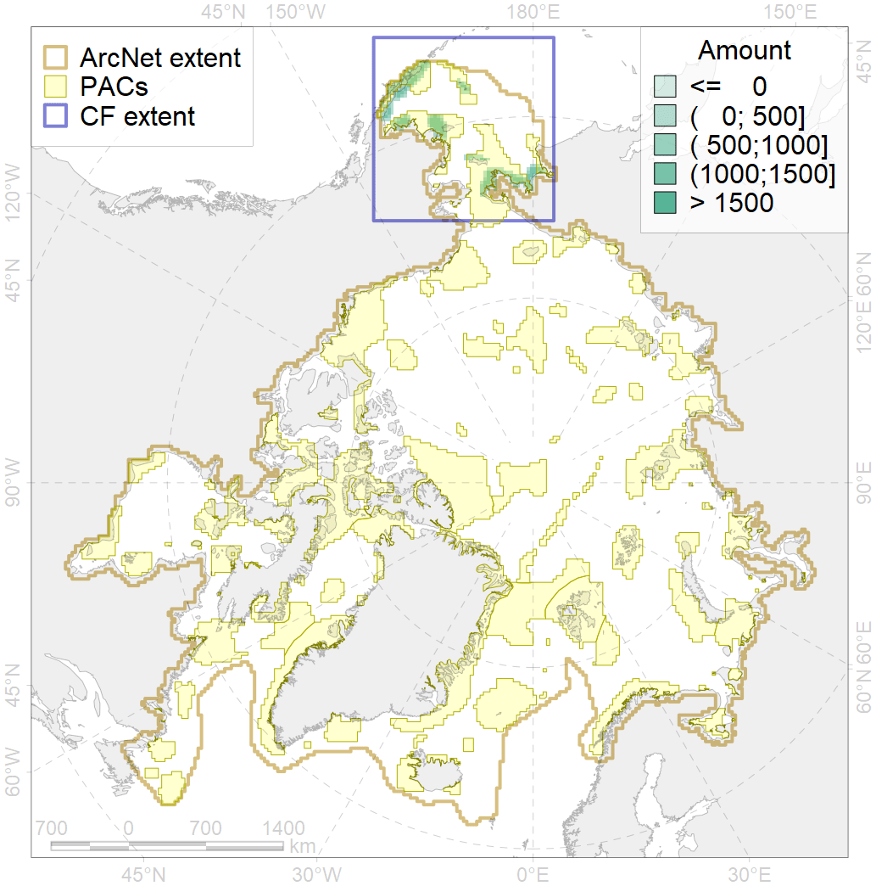
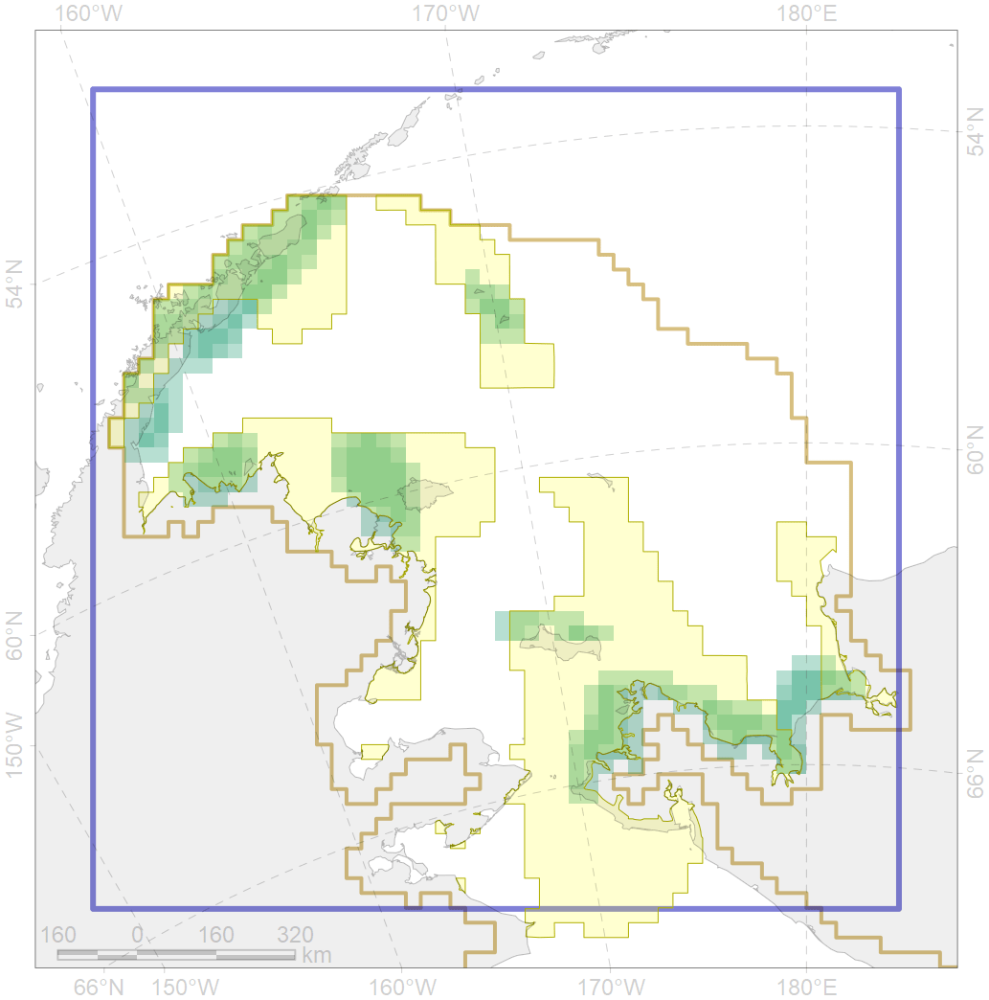

6017

| CF ID | 6017 |
| CF Name | Long-tailed duck (Clangula hyemalis) East Asian wintering grounds |
| Time Period | 2016 |
| Source(s) | Smith et al 2017 |
| Seasonality | October-April |
| Depth Horizon | >0 m |
| Methodology | Field Data |
| Author Name | Gavrilo, Tertitski |
| Notes | |
| Conservation Target Set in the Scenario | 0.768 |
| Conservation Target Achieved in the Scenario | 0.791 (Scenario: 103.0%) |
| PAC ID | Proportion in the PAC | Contribution to ArcNet Target Achievement | PAC’s Contribution to the Achieved Target |
|---|---|---|---|
| 1 | 18.6% | 24.2% | 23.5% |
| 2 | 5.1% | 6.5% | 6.3% |
| 3 | 26.0% | 33.3% | 32.3% |
| 4 | 2.4% | 2.1% | 2.0% |
| 5 | 28.1% | 35.1% | 34.1% |
| inner | 80.2% | 101.1% | 98.2% |
| outer | 19.8% | 1.8% | 1.8% |